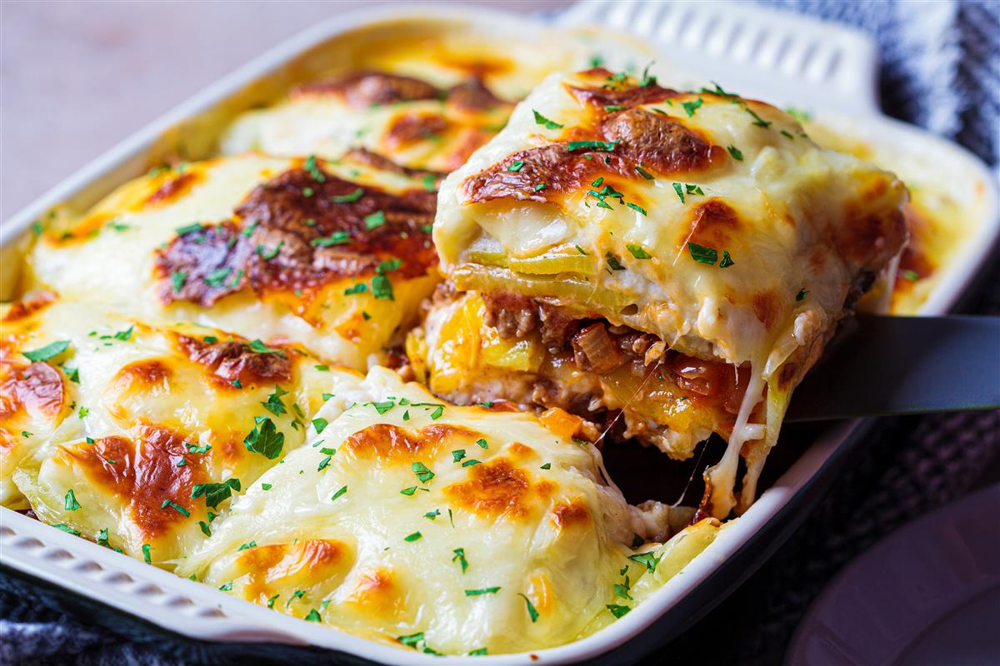

Musaka

Description
This is a traditional dish in Macedonia. It is widely spread
across the whole Balkan region.
It's main ingredients are potatoes and minced meat, but from
house to house, country to country the recipe differs.
Ingredients
- 1/2kg Potatoes
- 1/2kg Minced Meat
- 2 whole eggs
- Mixed spices
- Sour cream on top (optional)
Steps
- Clean and cut the potatoes in circles
- Put a layer of potatoes on a baking pan
- Put a layer of minced meat
- Repeat until desired height
- Mix 2 eggs
- Pour the eggs on top
- Put in oven on 250 degrees Celsius
- 15 minutes before taking it out of the oven, pour the sour cream on top
- Bake until sour cream stiffens a bit
- Enjoy!
Home